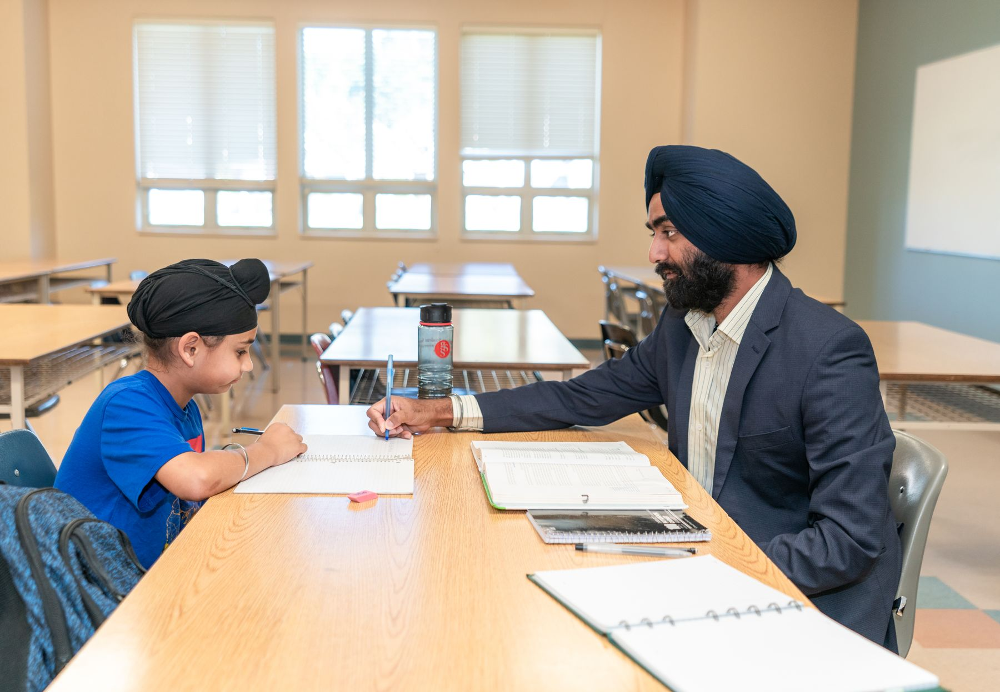
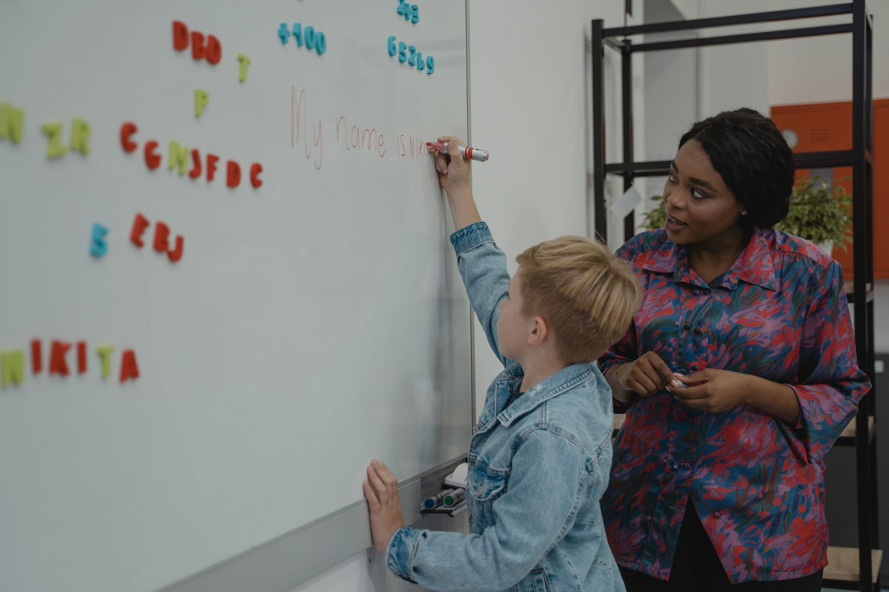

Foundation Years
Fluent core skills, confident study habits, and curiosity across Mathematics, Science, and English.
Explore foundation courses →Structured learning · Grades 6–12
Small-batch tutoring that turns each lesson into a clear next step—for students, tutors, and families.

Choose the right level
The Fieldnote method
Every activity has a place in the learning journey.
Map the missing links with recent schoolwork and a low-pressure baseline.
Build the idea through concise explanations and worked examples.
Move from guided attempts to mixed problems without busywork.
Review errors, update the plan, and record one useful next step.

Tutor trust
Our tutors turn dense concepts into diagrams, purposeful questions, and short demonstrations. Students do the explaining before they do the memorising.
Progress, not promises
Illustrative 12-week cohort data connects test gains with attendance, error review, and starting point.
Read the resultsBatch schedule preview
Family notes
Clarity, calm routines, and feedback families can act on.
Common questions
We begin with a conversation, recent schoolwork, and a short no-pressure diagnostic. Placement considers grade, current understanding, pace, and timetable.
Yes. A trial class is available where a suitable batch has space, followed by a brief fit review.
Parents receive a concise monthly progress summary and are contacted earlier if attendance or understanding needs attention.
Start with a clear next step
Tell us the grade, subject, and current challenge. We will suggest a sensible starting point.